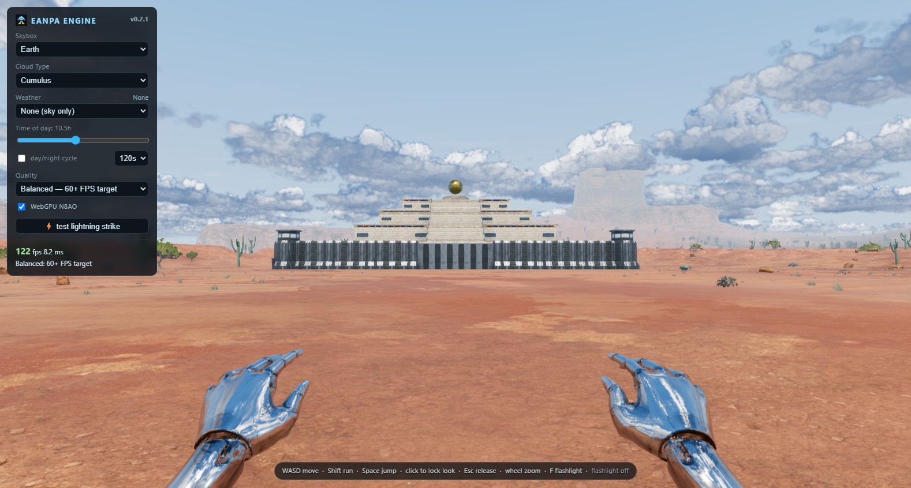

Open Eanpa · Validation and performance limits · GPU check results
92 automated tests pass. The upgrade retains the engine's renderer fixes and resolves shadow-map resize ordering. Stress timings are affected by other workloads; see the report.

This clip starts immediately after an inspection teleport and time change; the first environment refresh is visible.